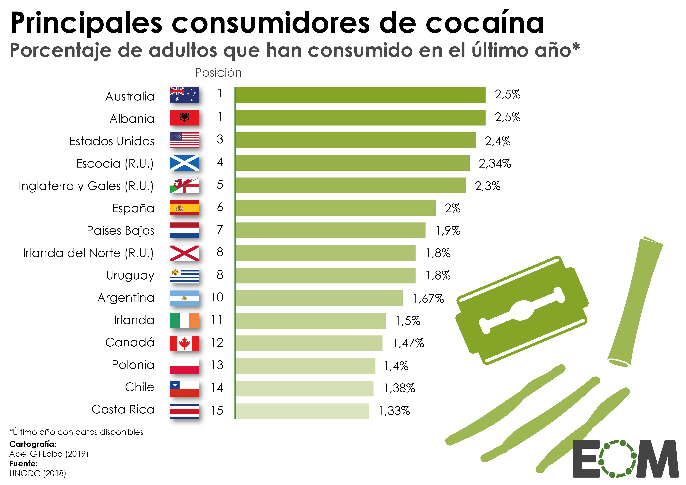

¿Cuales son las mas consumidas?
Las drogas mas consumidas varian segun el pais y la region,
pero a nivel mundial las drogas mas consumidas son:
1. Alcohol
2. Tabaco
3. Cannabis(Marihuana)
4. Anfetaminas (como el extasis y la metanfetamina cristalizada)

5. Cocaina

6. Opiaceos (como la heroina y los analgesicos recetados)
7. Tranquilizantes y Sedantes recetados(como el Valium y Xanax)

8. Alucinogenos(como el LSD y los hongos Alucinogenos)


Hablemos de mexico
Pues mexico a nivel global ocupa el puesto numero 26 de 30, ¿asi que no estamos tan mal o si?
Pues en la poblacion de 18 a 34 años.
-La prevalencia de consumo de cualquier droga alguna vez se incremento de 11.3% en 2011 a 15% en 2016;
En hombres aumento significativamente de 18.5% a 22.8% y en mujeres de 4.6% a 7.6%
-El consumo de cualquier droga en el ultimo año paso de 2.8% a 5%;
En hombres aumento de 4.7% a 8.2% y en mujeres se mantuvo estable de 1.1% a 2%.
-El consumo de cualquier droga se mantuvo, en el ultimo mes paso de 1.4% a 2.7%;
En hombres aumento de 2.6% a 4.8% y en mujeres se mantuvo estable 0.4% a 0.7%.